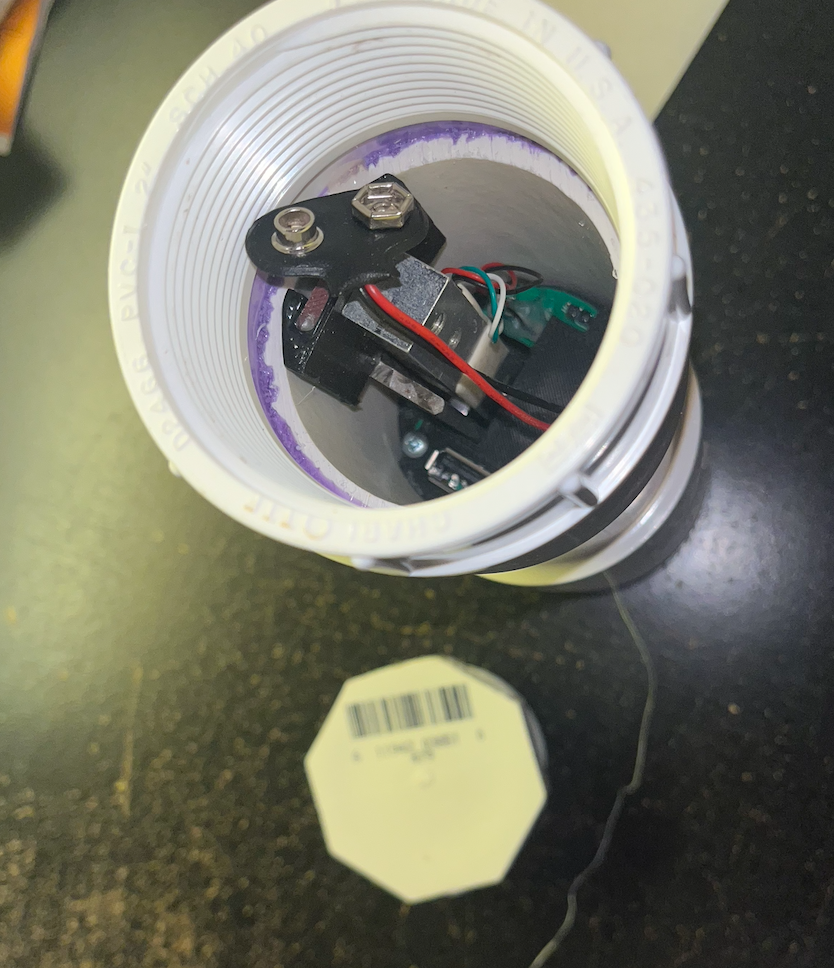
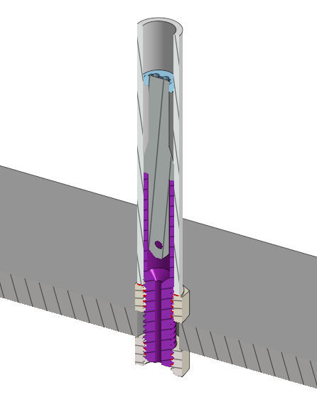
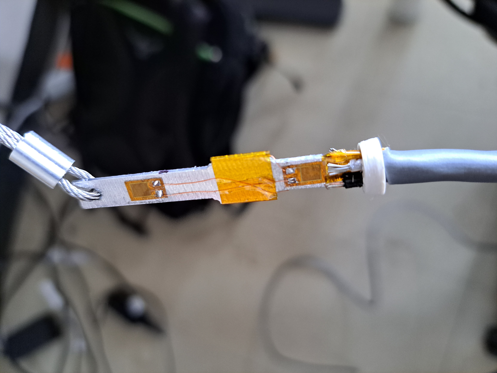
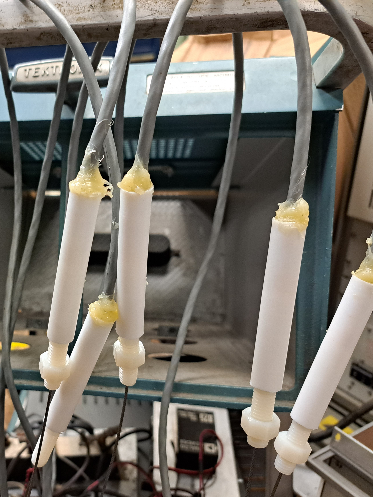
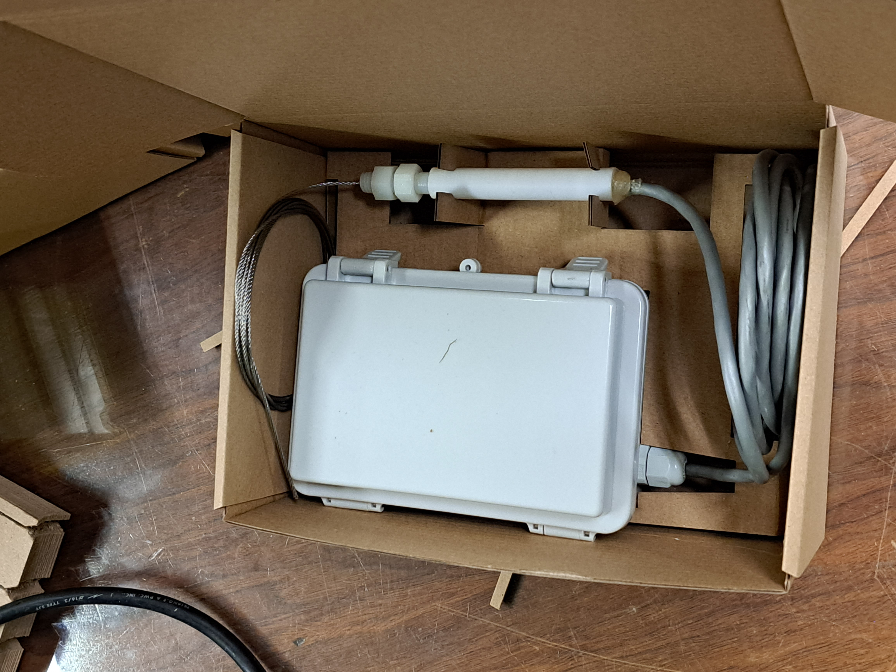
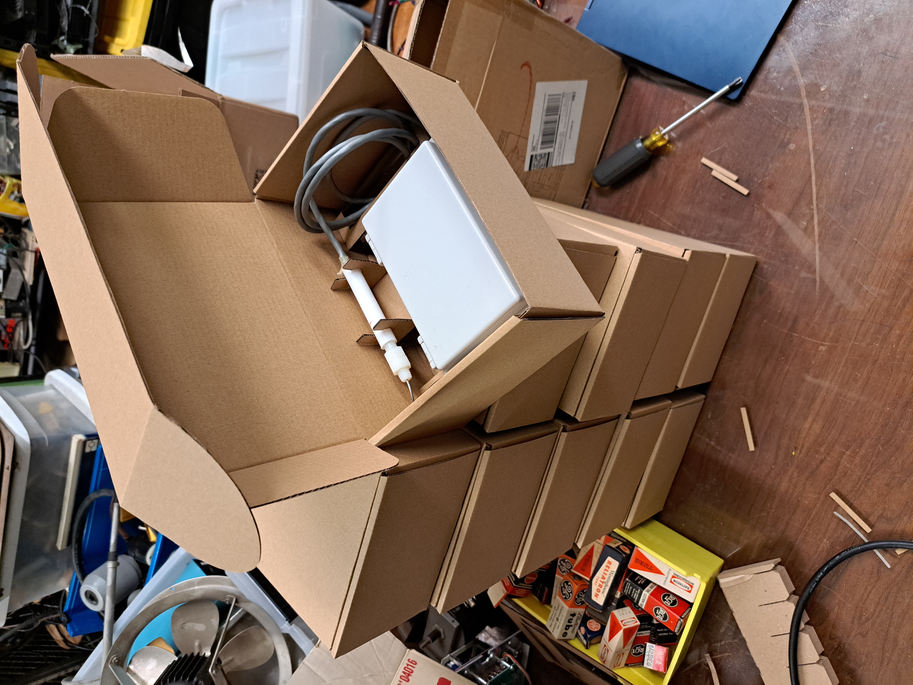

After a well is installed, it has to be monitored to make sure that the water level is stable. This hardware is for well installations that require more monitoring than is possible with manual measurements taken by community members, in particular for remote installations that are difficult to access. The well monitor works by weighing a pipe or other weight suspended within the well, since the apparent weight of the pipe is directly proportional to the amount of the pipe left above water. This project started in 2021 when the chapter of Engineers Without Borders I was volunteering with was struggling to get enough data on the water level in a well they had built in Nicaragua. The well was located in a remote location, and taking a measurement of the water level required a community member to trek out to it, remove the well cap, and lower a rope to the bottom. The water level was determined from the length of the rope that came up wet. Another well in the area had recently run dry, so it was critically important to monitor the water level in this well so that the pump rate could be adjusted accordingly. Unfortunately, the inconvenience of performing measurements meant that the engineers were only able to get measurements once every few days. I started to investigate ways to perform these measurements automatically.
This is a common problem and many solutions already exist. The most widely available well depth sensors use a pressure sensor sunk to the bottom of the well to determine the water level from the hydrostatic pressure. These sensors have to be very carefully built to maintain an internal pressure reference, and on top of that they must be constructed from materials that are safe for contact with drinking water. As a result, they usually cost several thousand dollars, and this was outside of the project budget. Working under the assumption that I would not be able to build a sufficiently reliable version of this type of sensor for any less, I had to find other approaches that could handle years outdoors in remote conditions. Without a way to make a conductivity based sensor out of safe materials that wouldn't degrade, and the high likelihood that an optical/laser based system would be blocked by the electrical conduit and pump line, we settled on a buoyancy measurement as the best option. This approach has a number of advantages. For a weight, we would use a length of the same drinking-water-safe pipe used for the pump, which would hang from a cable and span the widest range of water levels we expected. This way, the only material inside the well is the plastic pipe that is already being used. All of the electrical hardware can sit outside of the well, so repairs are straightforward and there is no risk that the electronics could contaminate the well.
The first version was designed to fit inside a 2.5" PVC pipe which was to be installed at the well head. It uses a load cell from Sparkfun.
|
|
 |

The entire well cap is only 6" diameter, and most of that space is occupied by the connections for the electrical conduit and water pipe connections. To get this sensor to fit, the strain gauge is mounted vertically, and an L-shaped lever pushes sideways on it. This also improves the sensitivity of the sensor slightly by providing some mechanical advantage. Unfortunately, even this configuration was too large to install on the well cap, and we determined that the available space was closer to about 1". I decided to design my own load cell that could fit in the available space, allowing the electronics to sit in a properly waterproof housing nearby.
In the new design, the load cell is set up as a bridge using four strain gauges bonded to the aluminum sensing element. Two of them are attached above the point where the load cell is supported, so they see no strain from the weight of the pipe, but they compensate for temperature drift in the two sensing elements. The load cell is held by a piece machined from a nylon bolt (purple below) that is eventually glued into a length of PTFE tubing. The threads of the bolt protrude from the bottom of the PTFE tubing so that the load cell can be bolted to the well cap. The top is sealed with epoxy and the small hole through the bottom for the cable connected to the pipe is sealed with petroleum jelly.
Without a way to cut sheet metal, I had to settle for milling the profile I wanted into aluminum bar stock and then slicing it into 1/16" pieces using a horizontal bandsaw. This left a horrible surface finish which had to be polished before the strain gauges could be glued on. Once the strain gauges are bonded, they are soldered into the final bridge configuration and connected to the cable leading to the rest of the electronics with 32 AWG magnet wire so they don't get torn if the main cable moves. A stainless steel wire rope for attaching the pipe is connected to the strain gauge with a ferrule before the whole assembly is glued together inside the PTFE housing.

|

|
|  |  |
The logging circuit board is built around an
ATSAMD21 microcontroller, chosen for it's low sleep power consumption and
USB support. We wanted to use full-size USB flash drives since they are
physically large (harder to lose when dropped in the dirt) and don't
require a special reader. By switching off the power to the analog
electronics and USB flash drive whenever it's not measuring, a single 9V
battery can keep the ATSAMD21 powered for years. An instrumentation
amplifier circuit made out of LM358 op amps gives adjustable gain and
offset control, and a TL431 circuit drops the output voltage down to the
right range for the microcontroller's ADC. Each board gets a card edge
connector for programming.
 These electronics go into an off-the-shelf
waterproof project box with a cable gland for the load cell cable and a 3D
printed cover to protect the PCBs and support the battery. In the end, I
made 10 systems in order to get a good sense for the total project cost
(and effort required) at scale. A big part of this project was designing a
system that I could personally build at a moderate scale with a reasonable
effort. This means it isn't enough to have something that I can get
working once or twice with a lot of debugging and careful poking with a
soldering iron. The total per-unit cost is about $25 and 1 hour per unit,
assuming I am making enough that machine set up time is negligible.
Finally, I designed some cardboard packaging to protect each system for
shipping.
These electronics go into an off-the-shelf
waterproof project box with a cable gland for the load cell cable and a 3D
printed cover to protect the PCBs and support the battery. In the end, I
made 10 systems in order to get a good sense for the total project cost
(and effort required) at scale. A big part of this project was designing a
system that I could personally build at a moderate scale with a reasonable
effort. This means it isn't enough to have something that I can get
working once or twice with a lot of debugging and careful poking with a
soldering iron. The total per-unit cost is about $25 and 1 hour per unit,
assuming I am making enough that machine set up time is negligible.
Finally, I designed some cardboard packaging to protect each system for
shipping.
|  |  |